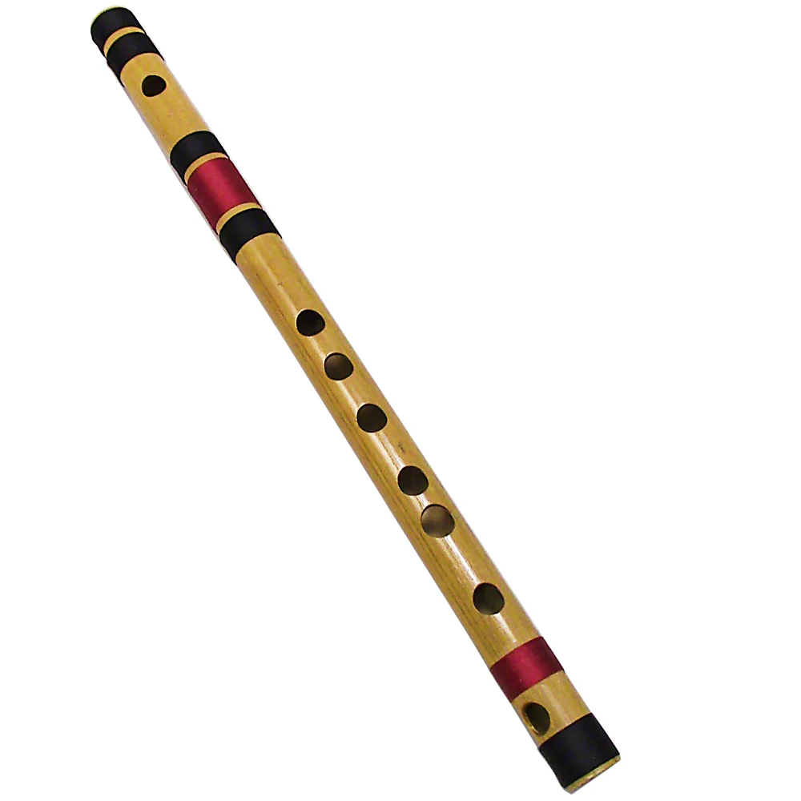

Musical Instruments
Tabla',
'The tabla is a popular percussion instrument originating from India. It consists of a pair of hand drums, typically made of wood, metal, or clay, and covered with stretched animal skin. The larger drum, known as the dayan or tabla produces higher-pitched sounds, while the smaller drum called the bayan or duggi produces deeper tones.',
'','playing-Tabla.mp4',
'Playing Tabla involves intricate finger movements and techniques to produce a wide range of sounds, from sharp, percussive notes to resonant tones. The player uses the fingers and palms of both hands to strike the drums, with each finger producing a distinct sound. Additionally, the tabla player may use the heel of the hand, the wrist, or even the fingertips to create various articulations and embellishments. It plays a central role in traditional Indian music ensembles, accompanying vocalists, instrumentalists, and dancers. It is also featured prominently in solo performances, where tabla players showcase their virtuosity and improvisational skills.',
'')">
Tabla
Harmonium',
'The harmonium is a popular keyboard instrument that originated in Europe during the 19th century and became widely used in Indian classical music, particularly in the Hindustani classical tradition. It is portable instrument with a keyboard and a set of bellows that generate sound through air pressure.',
'playing-Harmonium.png','',
'The harmonium produces sound when air is forced through metal reeds by pumping the bellows with one hand while playing the keys with the other hand. It has a distinct and rich timbre, characterized by its warm, sustained tones and the ability to create dynamic swells and fades through the manipulation of the bellows. In Indian classical music, the harmonium serves as both a solo and accompanying instrument. It is often used to provide harmonic support to vocalists and instrumentalists, adding depth and richness to performances. Its versatility allows it to accompany a wide range of musical genres, including bhajans (devotional songs), ghazals, thumris, and folk music.
Melodies of Harmonium:', 'Harmonium.mp3')">
Melodies of Harmonium:', 'Harmonium.mp3')">
Harmonium
Flute',
'The Indian flute, known as bansuri is typically made from bamboo or other natural materials. It is cylindrical in shape, with finger holes along its length and a blowing hole at one end. ',
'playing-Flute.png','',
'Flute performances by Indian musicians are featured in concerts, recitals, and cultural events across Malaysia. They are often invited to perform at prestigious venues, music festivals, and community gatherings, where their soul-stirring music resonates with audiences of all ages and backgrounds.
Melodies of Flute:', 'Seruling.mp3')">
Melodies of Flute:', 'Seruling.mp3')">
Flute
Sitar',
'Sitar is a plucked string instrument popularized by Hindustani classical music. From the mid-20th century on, the sitar influenced worldwide rock, jazz, and pop music. In addition to sitars now being seen in multiple musical genres, many string instruments are tuned to imitate the sitar.',
'playing-Sitar.png','',
'Sitar is made up of seasoned toon wood or teak. It is often referred to as the prince of Indian instruments, has made its mark in Malaysia as a symbol of rich cultural heritage and musical traditions for Indians. The Sitar instrument is typically 1.2 meters, or four feet, in length and is played sitting down with the instrument held at a 45-degree angle. The sitar is a plucked string instrument with a long neck, resonating gourd body, and movable frets. The resonator(s) are made from gourd—either pumpkin, calabash, or a wood replica. Bridge styles and materials vary depending on the preference of the musician or instrument maker. The same is true of the tabli, or soundboard. Altering the bridge to affect the quality of sound is called jawari, and is often achieved by filing down the bridge to a specific curve.
Sound of Sitar:', 'Sitar.mp3')">
Sound of Sitar:', 'Sitar.mp3')">
Sitar
Dance
Bharatanatyam',
'Bharatanatyam is one of the oldest classical dances from India. This dance started off in the temples of Tamil Nadu and slowly spread across South India and eventually made its way to Malaysia.',
'',
'Bharatanatyam.mp4',
'The word Bharatanatyam describes the dance. Natyam means dance in Sanskrit. Bharata is a mnemonic:
Bha - derived from the word Bhava means emotions and feelings
Ra - derived from the word Raaga means melody
Ta - derived from the word Tala means rhythm
The dancers wear traditional costume with jewellery and make up. Men wear pleated dhothis covering the lower portion of the body while a few pieces of jewellery cover the upper portion. Women wear tailor-made sari with specially stitched in pleats and jewellery. It is essential for all dancers to wear ankle bells as it help them keep a proper rhythm of their leg movements with the “Tala” sounds.', '')">
Bha - derived from the word Bhava means emotions and feelings
Ra - derived from the word Raaga means melody
Ta - derived from the word Tala means rhythm
The dancers wear traditional costume with jewellery and make up. Men wear pleated dhothis covering the lower portion of the body while a few pieces of jewellery cover the upper portion. Women wear tailor-made sari with specially stitched in pleats and jewellery. It is essential for all dancers to wear ankle bells as it help them keep a proper rhythm of their leg movements with the “Tala” sounds.', '')">
Bharatanatyam

Bhangra
Kathak',
'Kathak is a classical dance originating from northern India and developed under the influence of both Hindu and Muslim cultures.',
'kathak2.png',
'',
'Kathak is characterized by intricate footwork, expressive gestures, and precise rhythmic patterns that the dancer articulates by controlling about 100 ankle bells. Dancers often wear elaborate costumes, adorned with traditional jewelry and embellishments. Kathak performances typically include solo, duet, and group compositions, showcasing a blend of technical skill, artistic expression, and storytelling process.',
'')">
Kathak
Odissi',
'Odissi is traditionally a dance-drama genre of performance art, where the artist(s) and musicians play out a story, a spiritual message or devotional poem from the Hindu texts. It is one of the ancient dance forms that originated in the temples of Odisha.',
'',
'Odissi.mp4',
'Odissi dance is marked with graceful postures, emotive facial expressions, bright costumes, and makeup. The dancer uses intricate hand gestures to convey emotions, depict various characters, and tell stories. The versatile footwork complimenting the rhythm and music adds to the fluidity and expressiveness of the dance form. Odissi is performed by women who presented stories in the form of dance - dramas in praise of Lord Vishnu.',
'')">